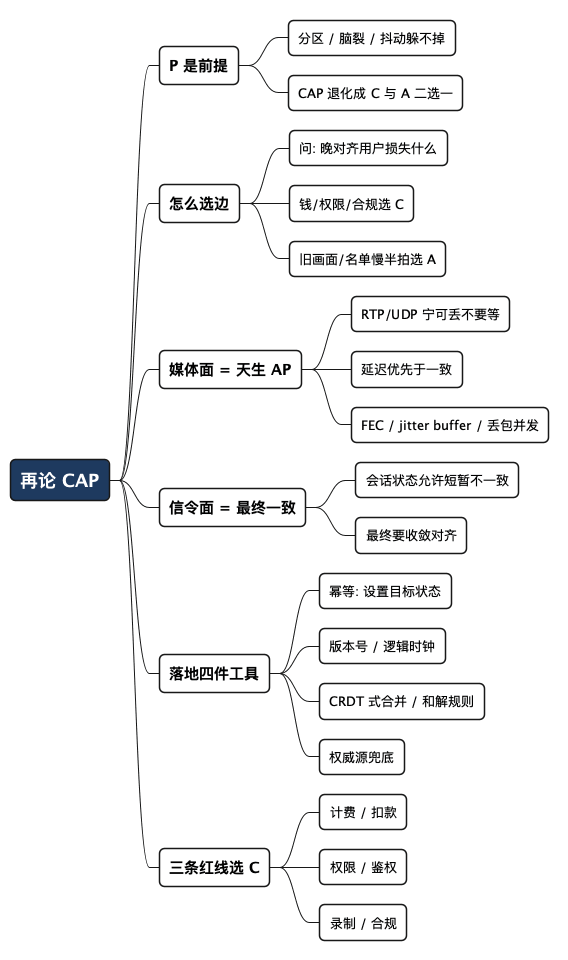

再论 CAP：会议和实时通信为什么要选 AP，以及最终一致性怎么落地
Posted on 六 10 10月 2026 in Tech
| Abstract | 再论 CAP：会议和实时通信为什么要选 AP，以及最终一致性怎么落地 |
|---|---|
| Authors | Walter Fan |
| Category | Tech |
| Version | v1.0 |
| Updated | 2026-10-10 |
| License | CC-BY-NC-ND 4.0 |
大纲
展开看看
- 网络问题远不止分区：连通性/DNS/丢包/时延/带宽/时钟，一张分层清单
- P 没得选：这些毛病全归结为 P，CAP 真正的选择题只在 C 和 A 之间
- 选边的判据：交易选 C，会议选 A，关键是问"这条数据晚一点对齐，用户会损失什么"
- 媒体面天生就是 AP：音视频包宁可丢也不等，一等就卡，延迟才是实时通信的命
- 信令面的收敛：谁在房间里、谁举手、谁共享屏幕——允许短暂不一致，最后要对齐
- 最终一致性怎么落地：幂等、版本号/逻辑时钟、CRDT 式合并、权威源兜底
- 三条红线：计费、权限、录制合规，这些场景不许最终一致
- 一张取舍清单：设计实时系统时，每类状态先过一遍这几个问题
最近接连碰到几次网络问题：机房之间的专线抖了一下，两边的信令服务各自以为自己是主，同一个会议里出现了两份"谁是主持人"的记录；还有一次跨区域部署，网络分区恢复之后，一部分用户看到的参会者名单和另一部分对不上，持续了十几秒才慢慢对齐。
这些毛病有个共同点：它们都不是"写错了代码"，而是网络本身靠不住——分区（partition）会发生，脑裂（split-brain）会发生，DNS 会解析到一个早就换掉的旧 IP，专线会时断时续，抖动（jitter）更是天天发生。网络能出的岔子有一长串（下一节我按类列全），但它们都指向同一件事：你没法假设网络永远畅通，于是 CAP 定理里那个 P 根本不是选项，是前提。
真正的选择题只有一道：网络出问题的时候，你要一致性（C）还是可用性（A）。 这篇想把这道题讲透，然后重点说清楚我们这行——音视频会议、实时通信——为什么几乎总是选 A，以及选了 A 之后，"最终一致性"到底怎么落地才不翻车。
- 面向有一点分布式背景的工程师；CAP、幂等这些词我会在第一次出现时用一句话解释
- 不讲定理证明，讲工程取舍和我踩过的坑
一、P 不是选项，是前提
先把 CAP 这三个字母摆正。CAP 说的是：在一个分布式系统里，一致性（Consistency）、可用性（Availability）、分区容忍（Partition tolerance） 这三样，网络一旦出问题，你最多同时保住两样。
很多人把它理解成"三选二，随便挑"。不对。在真实世界里，P 是老天爷发的牌，不是你能退的。而且"网络出问题"远不止分区一种——我最近接连踩的几次坑，摊开看是好几类毛病，下面这张表按性质分了分层：
| 类别 | 常见故障 | 它破坏了什么 |
|---|---|---|
| 连通性 | 网络分区、脑裂、闪断（flapping）、非对称路由（A 发得到 B、B 发不回 A）、NAT/防火墙穿透失败 | 通路本身断了或变成单向，节点互相"看不见" |
| 名字解析 | DNS 解析失败、解析到旧 IP、TTL 过期、权威服务器挂了 | 连地址都拿不到，或拿到过期的，故障从入口就开始 |
| 丢包 | 丢包、乱序、重复 | 包到不了、顺序乱、收到多份——实时媒体的头号敌人 |
| 时延 | 抖动（jitter）、高延迟、缓冲膨胀（bufferbloat） | 包到了但不准时，"谁先谁后"变得模糊 |
| 带宽 | 带宽不足、拥塞、运营商限速 | 管子太细或太挤，大流量先遭殃 |
| 时钟 | 时钟漂移（clock skew）、慢节点/灰色故障（gray failure） | 物理时钟对不齐、节点没死但变慢，比彻底宕机更阴险 |
这里头有几个关系要理清：脑裂是分区的后果（分区之后两边各自认主）；丢包和抖动往往是拥塞的表现；而 DNS 故障最容易被忽略——它不在"你的服务"里，却是几乎所有外部调用的第一跳，一旦解析挂了或解析到旧 IP，后面再健壮的重试都白搭（这事我在另一篇讲 DNS 的文章里专门扒过）。
这些毛病有一个共同点：你写再漂亮的代码也消不掉它们，因为它们在网线上、在路由器里、在运营商的骨干网上、在别人的 DNS 服务器里，不在你的进程里。用 CAP 的话说，它们全都归结为一个字——P：网络不可靠是常态。既然 P 躲不掉，CAP 就退化成一道二选一：
分区发生时，你要么拒绝服务来保一致（CP），要么继续服务但允许暂时不一致（AP）。 没有第三条路。所谓"CA 系统"，只存在于网络永不故障的幻想里。
多年前我在一篇服务器开发检查清单里写过一句话，今天看依然成立：金融银行需要强一致，宁可牺牲可用性；会议服务器需要高可用，最终一致就够了。 那会儿是一句结论，这篇想把"为什么"和"怎么做"补上。
二、怎么选边：问一个问题就够了
交易选 C、会议选 A，这个结论好记，但真到了设计台面上，一个系统里有几十种状态，不可能一刀切。判断每一类数据该靠哪边，我习惯只问一个问题：
这条数据晚一点才对齐，用户会损失什么？
答案要是"钱、权限、法律责任"，那就得选 C，晚对齐不如不服务。答案要是"短暂看到旧画面、名单慢半拍刷新"，那选 A，服务不能停。
| 维度 | 偏 C（强一致） | 偏 A（高可用 + 最终一致） |
|---|---|---|
| 典型场景 | 支付、扣款、下单、库存 | 音视频流、参会者名单、在线状态 |
| 分区时的行为 | 宁可报错、拒绝写，也不能算错账 | 继续服务，先本地处理，恢复后再对齐 |
| 用户容忍度 | 一分钱都不能错 | 看到几秒旧数据无所谓，卡住才受不了 |
| 对齐窗口 | 必须立即，否则不算数 | 秒级甚至更短对齐，用户基本无感 |
| 代价 | 牺牲可用性（可能转圈、报错） | 牺牲瞬时一致（可能短暂看到不一致） |
举个两边对照的例子。你在会议里转一笔红包（真有这种功能），这是交易，网络分区时宁可弹"网络异常，请重试"，也绝不能两个机房各记一笔，把一块钱变成两块。但同一个会议里，"谁刚进来了"这种状态，分区时就该各显示各的，等网络恢复了名单自动对齐——你总不能因为机房之间网抖了一下，就把整个会议室冻住吧。
同一个产品，不同的数据，走不同的路。 这是 AP 系统最容易被误解的地方：选 A 不等于全局放弃一致，而是把需要强一致的那一小撮数据圈出来单独保护，剩下的大头走最终一致。
三、媒体面：实时通信天生就是 AP
说到音视频，有个事实很多人第一次听会觉得反直觉：实时媒体流从底层协议开始，就是为"宁可丢、不要等"设计的。
音视频包走的是 UDP/RTP，不是 TCP。TCP 的哲学是"一个包丢了，我停下来重传，保证你收到的字节一个不差、顺序不乱"——这是一种强一致的执念。可这套执念放到实时通话里是灾难：你正在说话，第 100 个语音包丢了，TCP 会卡住等重传，等它补回来，对话早就过去两秒了，用户听到的是一段突然的静默加上延迟累积。
实时媒体的选择正相反：那个包丢了就丢了，别等，用后面的包继续放，顶多这一帧画面糊一下、这 20 毫秒的声音缺一点。 丢包并发（concealment）、前向纠错（FEC）、抖动缓冲（jitter buffer）——这些技术全都在做同一件事：在"不完整但及时"和"完整但迟到"之间，坚定地选前者。
这就是 AP 在媒体面的物理体现。用 CAP 的话说：
- 分区/丢包（P）：网络会丢包，这是前提，不是异常。
- 可用性（A）：声音和画面必须持续流动，哪怕带着瑕疵。
- 一致性（C）：放弃"每个包都完整到达且有序"这个强一致目标。
所以当有人问"实时通信要不要选 AP"，媒体面根本不需要讨论——它从 RTP 协议被设计出来那天起就选好了。 延迟才是实时通信的命，一致性在这里要给延迟让路。我在另一篇讲 AI 语音客服的文章里说过，电话里超过一秒的静默用户就觉得"卡了"；这背后的工程哲学，就是媒体面的 AP。
四、信令面：允许短暂不一致，但最后要对齐
媒体面的 AP 是天生的，真正要动脑筋的是信令面——也就是"谁在房间里、谁是主持人、谁举了手、谁在共享屏幕"这些会话状态（session state）。
这些状态不像媒体包那样丢了就算，它们需要在所有参会者之间最终看起来一致。但"最终"是关键词：分区的那几秒、抖动的那几百毫秒，允许大家看到的不完全一样，只要网络恢复后能自动收敛到同一个结果。
这就是最终一致性（eventual consistency）：不保证任何时刻处处相同，但保证"没有新变化之后，所有副本最终达成一致"。
开头那两个坑，坑的就是这里。"两份主持人记录"是脑裂——分区时两边各自认主，恢复后没有和解规则，就僵在那儿了。"名单对不上十几秒"是收敛太慢——方向对，但缺了主动对齐的机制，只能干等。
AP 不是"随它去"，而是"先让它跑，再想办法让它对齐"。想对齐，得有机制，这就是下一节。
五、最终一致性怎么落地：四件工具
把"最终一致"从一句口号变成能上生产的东西，我常用的就这四样。它们不是什么高深理论，但缺一个就容易翻车。
1. 幂等：同一个操作重复执行，结果不变
幂等（idempotent） 的意思是：同一条指令执行一次和执行十次，效果一样。这是最终一致的地基，因为网络不可靠，重试是常态，没有幂等，重试就会把数据搞乱。
比如"用户 A 举手"这个操作，网络抖动导致客户端重发了三次，服务端如果每次都 +1，就成了"举了三次手"。正确做法是把它设计成"设置 A 的举手状态为 true"——重发多少次，状态都是 true。把"增量操作"改成"设置目标状态"，是让操作幂等最省事的一招。
2. 版本号 / 逻辑时钟：判断谁的数据更新
分区恢复后，两边的数据不一样，到底该信谁？光看"谁后到"不行，因为网络抖动下"后到 ≠ 后发生"。得给每次变更打一个能比较先后的标记。
- 简单场景用版本号或时间戳：每改一次 +1，合并时取版本高的。
- 讲究一点用逻辑时钟（如 Lamport clock / vector clock）：不依赖各机器的物理时钟（它们本来就对不齐），用逻辑顺序判断因果关系。
主持人脑裂那个坑，根因就是缺了这一层——两边各自改了"主持人"，恢复时没有版本可比，系统不知道该信哪个，只能卡住。
3. 冲突合并：两边都改了，怎么和解
版本号能解决"谁新谁旧"，但有些场景是两边同时改了不同的东西，不是覆盖关系，而是要合并。
- 能自动合并的，用类似 CRDT（Conflict-free Replicated Data Type，无冲突复制数据类型）的思路。典型的是"参会者集合"：A 机房加了用户 X，B 机房加了用户 Y，合并就是求并集，谁也不覆盖谁，天然收敛。举手列表、在线用户集合，大多能这么处理。
- 不能自动合并的，定一条明确的和解规则兜底：比如"主持人以账号权限最高者为准""同一字段以版本号大的为准"。规则可以简单，但必须事先定死、代码里写明，不能留给运气。
脑裂不可怕，可怕的是脑裂之后没有和解规则。预设好"打架了听谁的"，脑裂就从事故降级成了一次自动收敛。
4. 权威源兜底：总得有个最终说了算的
最终一致不等于没有权威。对那些实在不好自动合并、又比较重要的状态，留一个单一权威源（single source of truth）：平时各节点本地快速响应（保 A），但以某个中心服务（或某个被选举出的 leader）的记录为最终准绳，恢复后以它为准做一次对齐。
这是 A 和 C 之间的实用折中：绝大多数时候走本地、图快；真出了分歧，回权威源、图对。
把这四样串起来看，最终一致性的工程套路就清楚了：
用幂等扛住重试，用版本号/逻辑时钟判断先后，用 CRDT 式合并或预设规则化解冲突，用权威源兜最后的底。 四样齐了，"先跑起来、再对齐"才是可控的，而不是碰运气。
六、三条红线：这些场景不许最终一致
讲了半天 AP 的好，得泼盆冷水：AP 和最终一致不是万能钥匙，有些东西一旦最终一致，就是事故。 做实时系统，我给自己画了三条红线。
- 计费 / 扣款：会议时长计费、增值服务扣款、红包转账——凡是涉及钱的，必须强一致。分区时宁可这个功能暂时不可用，也不能算错账。一块钱变两块，用户投诉、财务对账、监管问询，一样跑不掉。
- 权限 / 鉴权：谁能进这个会、谁能看这段录制、谁有管理员权限——鉴权判断不能靠最终一致。你总不能让一个没权限的人"先进来，等会儿系统发现不对再踢出去"，这几秒钟他可能已经听到了不该听的内容。鉴权要么当场确认，要么拒绝。
- 录制 / 合规：法律要求的录制、审计日志、合规留痕——这些数据的完整性和准确性是硬要求，不能"最终"，只能"确定"。少录一段、时间戳对不齐，出了法律纠纷就是大麻烦。
这三条的共同点：它们的错误不可逆、代价不对称。 看到几秒旧的参会者名单，刷新一下就好了，代价几乎为零；但算错一笔钱、放错一个人进会、漏录一段合规内容，事后补救的成本远远大于当时"拒绝服务"的那点损失。
选 A 的前提，是先把这几块选 C 的红线圈出来。 这不矛盾——一个成熟的实时系统，骨架是 AP，关键关节是 CP。
七、一张取舍清单
设计或者排查实时系统时，我会拿每一类状态过一遍下面这几个问题。它不长，但能逼你把"到底选 C 还是 A"想清楚，而不是默认全选一边。
-
这条数据晚几秒对齐，用户损失什么？ 损失是钱/权限/合规 → 选 C；损失只是"看到旧数据" → 选 A。
-
分区发生时，这个功能该停还是该继续？ 能接受停 → CP；必须继续 → AP，并准备好恢复后的对齐机制。
-
这个操作幂等吗？重发一次会不会出错？ 不幂等就改造：把"增量"改成"设置目标状态"。
-
两个副本打架时，听谁的？规则定死了吗？ 没定就是埋雷。要么版本号/逻辑时钟判先后，要么预设和解规则，要么回权威源。
-
收敛要多久？有没有主动对齐，还是干等？ 只靠"下次心跳碰巧带过来"是不够的，恢复后要有主动 reconcile 的动作。
-
这块是不是踩了三条红线（计费/权限/合规）？ 踩了就别犹豫，选 C。
总结：骨架选 AP，关节守 CP
P 躲不掉，所以 CAP 从来不是三选二，而是分区发生时在 C 和 A 之间二选一。网络交易选 C，音视频会议和实时通信选 A——媒体面天生就是 AP，延迟优先于一致；信令面走最终一致，允许短暂不一致，但要靠幂等、版本号、冲突合并、权威源让它可靠地收敛。
但选 A 的前提，是先把计费、权限、合规这三条红线圈成 CP。一个靠谱的实时系统，是一副 AP 的骨架，配上几个 CP 的关节。 哪里图快、哪里图对，不是拍脑袋，是一条数据一条数据问出来的。
下次再遇到脑裂、名单对不上、状态收敛慢，先别急着骂网络——网络靠不住是前提。该问的是：这块到底该选 C 还是 A？打架了我有没有定好听谁的？
全文思维导图
@startmindmap
<style>
mindmapDiagram {
node {
BackgroundColor #F8F9FA
RoundCorner 10
Padding 10
FontSize 13
}
:depth(0) {
BackgroundColor #1E3A5F
FontColor white
FontSize 18
FontStyle bold
}
:depth(1) {
FontSize 15
FontStyle bold
}
:depth(2) {
FontSize 13
}
}
</style>
* 再论 CAP
** P 是前提
*** 分区 / 脑裂 / 抖动躲不掉
*** CAP 退化成 C 与 A 二选一
** 怎么选边
*** 问: 晚对齐用户损失什么
*** 钱/权限/合规选 C
*** 旧画面/名单慢半拍选 A
** 媒体面 = 天生 AP
*** RTP/UDP 宁可丢不要等
*** 延迟优先于一致
*** FEC / jitter buffer / 丢包并发
** 信令面 = 最终一致
*** 会话状态允许短暂不一致
*** 最终要收敛对齐
** 落地四件工具
*** 幂等: 设置目标状态
*** 版本号 / 逻辑时钟
*** CRDT 式合并 / 和解规则
*** 权威源兜底
** 三条红线选 C
*** 计费 / 扣款
*** 权限 / 鉴权
*** 录制 / 合规
@endmindmap

本作品采用知识共享署名-非商业性使用-禁止演绎 4.0 国际许可协议进行许可。 欢迎在我的个人网站 https://www.fanyamin.com 访问原文并评论。